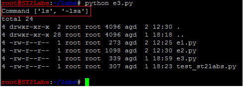

{kind=link}
Ahora que estoy de vacaciones (bendita semana santa) he sacado un hueco
para terminar uno de los muchos artículos que tengo pensado escribir
sobre el lenguaje de programación python, donde a pesar de ser yo un
recién llegado al mundo python, ya me siento extremadamente cómodo
programando en python, hasta tal punto que se ha convertido en mi
lenguaje favorito.
En artículos anteriores os hable de como usar python como lenguaje de
Hacking, al hilo de los mismos, os voy a introducir en algunos conceptos
y/o comandos de python de utilidad en el área de la Seguridad
Informática, como por ejemplo ejecutar comandos del sistema de forma
segura (evitando inyección arbitraria de comandos) desde un programa
escrito en python.
Introducción
Cuando aprendes a programar lo habitual es empezar con el lenguaje
pseudo-código y C, en mi experiencia programando, de C pase a emsablador
Morotorla 6880 y luego C++; en el momento que empiezas a utilizar la
programación orientada a Objetos descubres los beneficios e
inconvenientes de los cuales no os voy a hablar. Lo mejor de python es
la flexibilidad, rapidez e ingente cantidad de recursos disponibles con
los que contar.
Tras probar varios lenguajes de programación (con sus contras y sus
pros) me quedo con python, siendo este el inicio de una serie de
artículos o publicaciones, donde os mostrare algunos ejemplos prácticos
de programación en python (orientados a hacking), como es el caso de
éste artículo, donde vamos a ver como leer los puertos abiertos del
sistema (listening port).
¿ Por donde empiezo ?
Existen al menos tres maneras distintas de ejecutar un comando del
sistema desde un programa escrito en python, la primera es utilizando
las librerías del sistema os, la segunda, utilizando la librería
subprocess y la
tercera, es utilizando la librería commands.
Vamos a ilustrar con algunos ejemplos prácticos la utilización de las
diferentes librerías. Sin embargo, tanto como la librerías commands,
como la librería os, ha sido sustituidas por subprocess, por lo que
centraré los ejemplos en subprocess.
Nota: Los ejemplos estan preparados
para funcionar solamente en sistemas UNIX,
No obstante, las librerías commands, y
os, ha sido sustituidas por subprocess.
Ejemplo 1
Ejecutar cualquier comando del sistema a través de un programa escrito
con python (run a system command through python script), en el ejemplo
se ha utilizado “ls -lsa”, para listar el contenido de un directorio.
CODE_
| Example python code - e1-py |
{kind=link}
OUT_
| Example 1: e1.py - Run system command from python |
{kind=link}
Nota:
Passing shell=True can be a security
hazard if combined with untrusted input ([read
about](https://docs.python.org/2/library/subprocess.html))
Ejemplo 2
Ejecuta cualquier comando introducido por el usuario desde el teclado o
STDIN !
| Example python code - e2.py |
{kind=link}
Nota:
Passing shell=True can be a security
hazard if combined with untrusted input
<span
style=“font-family: sans-serif; font-size: x-small; line-height: 20.7999992370605px;“>([read
about](https://docs.python.org/2/library/subprocess.html)<span
style=“font-family: sans-serif; font-size: x-small; line-height: 20.7999992370605px;“>)
OUT_
**
**Running cat /etc/passwd
| Example 2: run cat /etc/passwd command from python code |
{kind=link}
Ejemplo 3:
**
**
Ejecutar y mostrar el resultado de listar los archivos de un directorio
“ls -ls”, utilizando parametrización del comando y usando tuberías en
lugar de ejecución directa en la SHELL, es una forma más segura de
ejecutar comandos directamente en sistema, evitando ataques de COMMAND
OS Injection sobre vuestro código, claro esta que esto es meramente un
ejemplo didáctico y las diferencias entre los ejemplos son minimamente
significativas.
CODE_
| Example python code - e3.py |
{kind=link}
**
**
Ejecución
**
**
ST2Labs > python e3.py
**
**
OUT_
**
**
|  |
| Example 3 - Run a secure system command. |
{kind=link}
Todos los ejemplos los puedes descargar desde mi repositorio ST2Labs en
GitHub (https://github.com/ST2Labs/ST2Example).
#ST2Labs